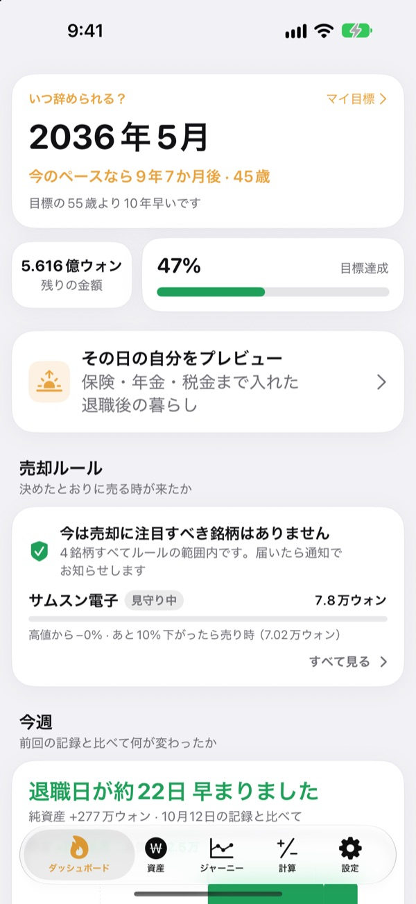
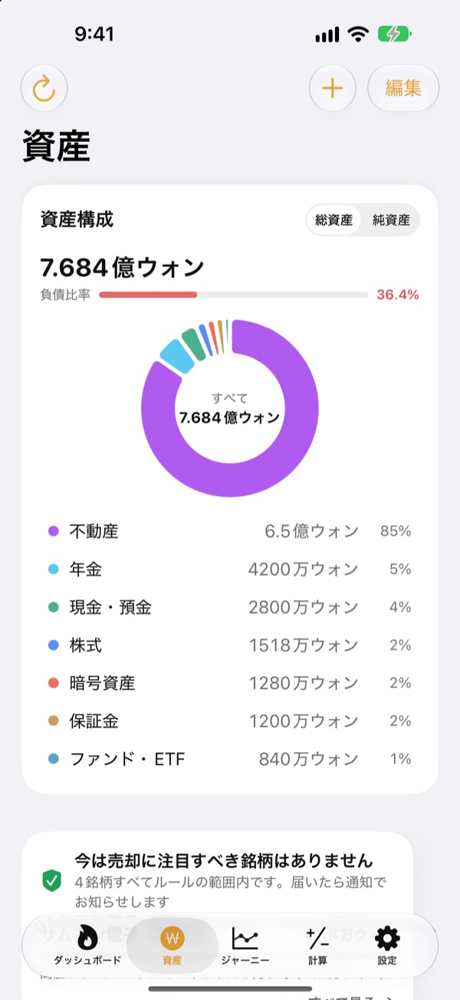
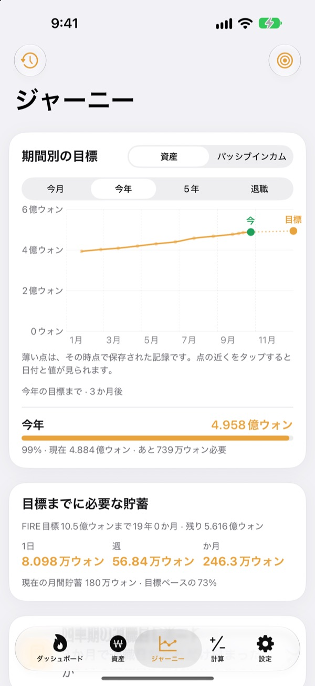
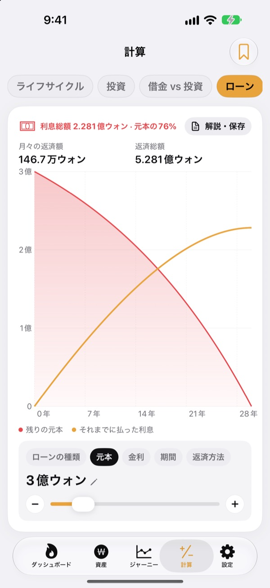

いつ辞められるか
勘ではなく数字で
生活費と貯めたお金を入れるだけで、会社を辞められる月がわかります。資産が動くたびに、その日が近づいたのか遠のいたのかがすぐに見えます。
アカウント不要。記録はこのデバイスに保存されます。

退職日を計算してみる
スライダーを動かしてみてください。アプリの最初の画面と同じ計算です。
「もう辞めてもいいかな」と、毎回電卓をたたいていませんか？
銀行、証券口座、年金、保証金がばらばらだと、自分がいくら持っているかさえあいまいになります。だから辞められる時期も、いつまでも勘のまま。Toesagakは散らばった資産を1つの画面に集め、その合計から退職できる月を計算し続けます。
散らばった資産を1つの画面に
不動産、株式、ファンドやETF、年金、現金と預金、保証金、暗号資産、ローンまで種類別にまとめ、総資産と純資産、負債比率を表示します。
株式と暗号資産は価格を取得して評価額を最新に保ち、証券アプリのスクリーンショットから銘柄と評価額をまとめて取り込めます。

目標まで、1日いくら？
今月、今年、5年後、リタイアまでの目標とこれまでの記録を1つのグラフで確認できます。目標に届くには1日、1週間、1か月にいくら貯めればよいかも教えてくれます。
資産が変わるとその週の記録が自動で残るので、何もしなくても推移が積み上がります。

大きな決断の前に計算を
ライフサイクルの資産推移、投資、返済と投資の比較、ローン、預金と積立、給料の購買力、お金を時間に換える計算機を搭載。値を動かすとグラフがすぐに描き直され、変更前の曲線が点線で残るので比べやすくなっています。
よく使う条件は名前を付けて保存し、いつでも呼び出せます。

はじめ方は3ステップ
- 1
生活費と年齢を入れる
ざっくりで大丈夫。すぐに退職日が表示されます。
- 2
資産を登録する
種類ごとに分けて入れるほど、日付が正確になります。
- 3
ときどき開いて確認する
毎週の記録は自動で積み上がり、毎月1日にお知らせすることもできます。
アプリの計算方法
- 目標金額
- 退職後1年分の生活費 ÷ 安全取り崩し率（4%なら生活費の25年分）
- 退職時期
- 今の純資産に毎月の積立額を加え、期待リターンで増やしたときに目標に届く月
- 総資産
- 持っている資産をすべて足した額
- 純資産
- 総資産からローンなどの負債を引いた額
- 達成率
- 純資産 ÷ 目標金額。パッシブインカム基準でも確認できます
- 変更できる値
- 毎月の生活費、安全取り崩し率2〜6%、期待リターン0〜12%、辞めたい年齢
すべての結果は入力値にもとづく参考用の計算であり、投資の勧誘ではありません。
よくある質問
記録はどこに保存されますか？
このデバイスの中だけです。会員登録はなく、開発者に送られることもありません。設定でiCloud同期をオンにすると、ご自身のiCloudアカウントを通じてiPhoneとiPadで同じ記録を見られます。
価格が更新されません。
米国株、韓国株、暗号資産、為替レートは設定なしで取得できます。インターネット接続と、ティッカーや銘柄コードが正しいかをご確認ください。マンション価格は韓国の公的な不動産データを使うため、設定で無料のサービスキーを入力する必要があります。
総資産と純資産の違いは？
総資産は持っている資産の合計、純資産はそこからローンなどの負債を引いた額です。退職時期は純資産をもとに計算します。
機種変更のとき、記録はどう移せますか？
設定の書き出しでバックアップファイルを作り、ファイルアプリやiCloud Drive、メールに保存してから、新しいデバイスで復元してください。バックアップファイルにAPIキーは含まれません。アプリは最新20件のバックアップもデバイスに自動で保管します。
売りどきアラートはどう動きますか？
銘柄ごとに、高値からどこまで下がったら知らせるか、または目標価格を決めておくと、その線を越えたときにお知らせします。上がっているときは通知しません。価格の確認はアプリを開いたときと、iOSがバックグラウンドで許可したとき（通常は数時間おき）に行うため、リアルタイムの監視ではありません。
数字を人に見られたくありません。
設定でアプリロックをオンにすると、Face IDまたはパスコードで開くようになります。ロック中は毎月のお知らせにも数字を表示しません。
先に中を見てみたいです。
設定のデモデータをオンにすると、架空の人物の資産ですべての画面を試せます。オフにすれば自分の記録にそのまま戻ります。iCloud同期中はデモデータを使えません。
データをすべて削除するには？
アプリを削除すると、デバイスに保存された記録もすべて削除されます。残しておきたい場合は、先に設定でバックアップファイルを書き出してください。
この数字を頼りに投資してもいいですか？
Toesagakの結果は、入力値と想定リターンにもとづく参考用の計算です。投資の勧誘ではなく、実際の結果は市場やご自身の状況によって変わります。
不具合の報告、ご要望、ご質問はleeo@kakao.comまでお送りください。